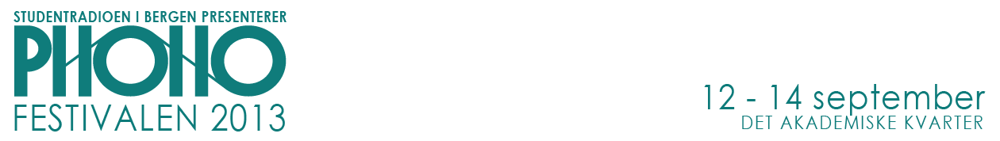

Hopp til hovedinnhold

Phonofestivalen
HJEM
OPPDATERINGER
ARTISTER
ARTISTER 2013
TIDLIGERE ARTISTER
SPILLELISTER
WIMP
SPOTIFY
KULTUR- OG SAMFUNN
KULTUR- OG SAMFUNN 2013
PROGRAM
DIGITALT PROGRAM
BILLETTER
BILLETTINFORMASJON
FESTIVALPASS
DAGSPASS
FRIVILLIG
FRIVILLIG 2013
ELEKTRONISK SØKESKJEMA
INFORMASJON
OM PHONOFESTIVALEN
KONTAKT
Hjem
Artister
Billetter
Kultur- og samfunn
Program
Frivillig
Mobil Menu
Artister
Kultur
Program
Billetter
Tilgang nektet
Du har ikke tillatelse til å besøke denne siden.